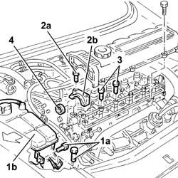
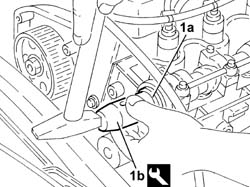

1036B36 front crankshaft oil seal-r r with timing belt removed
- Path
- Procedures > 10 ENGINE > 1036 TIMING SYSTEM > 1036B overhead camshaft > 1036B36 front crankshaft oil seal-r r with timing belt removed
- Kind
- repair procedure (removal / refitting; the operation number is the code)
- Applies to
- engines: 1.9 JTD 8v , 2.4 JTD 10v; all production periods
- Interactive page
- https://sloeber94.github.io/elrnDB-a156/en/#/3237773
Applies to: engines: 1.9 JTD 8v , 2.4 JTD 10v; all production periods
 Removing
Removing
 Refitting
Refitting1016A20 single cam cover - r + r and replace gasket
1032B61 timing belt pulley - r r
1. Undo the bolt (1a) and remove the engine coolant tank (1b) aside.
2. Undo the bolts (2a) and remove the camshaft front cap (2b).
3. Undo the two front bolts securing the camshaft journal lubrication pupe and camshaft caps.
4. Remove the camshaft front oil seal.

Applies to: engines: 1.9 JTD 8v , 2.4 JTD 10v; all production periods
Refitting
RemovingFit the camshaft front cap and fix it tightening the bolts to the recommended torque.
 | Fastening | Component | Ø | Value (daNm) |
|---|---|---|---|---|
- | Bolt | CAMSHAFT CAPS | M7 | 1.3 - 1.6 |
Tighten the two bolts securing the camshaft journal/caps lubrication pipe to the specified torque.
| Fastening | Component | Ø | Value (daNm) |
|---|---|---|---|---|
- | Bolt | CAMSHAFT CAPS | M7 | 1.3 - 1.6 |
1. Fit the camshaft front oil seal (1a) using the tool (1b).
 | Name | Country |
|---|---|---|
1b | Fitting tool | 1.821.247.000 |

Applies to: engines: 1.9 JTD 8v , 2.4 JTD 10v; all production periods
Refit the coolant reservoir in its seating and secure with its bolt.